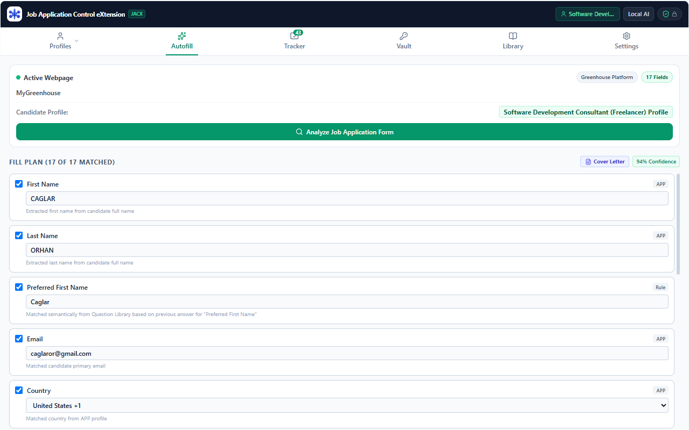

JACX is the privacy-first Chrome sidepanel assistant for verified ATS form autofill, adaptive question learning, and continuous application tracking. All resumes, credentials, and answers remain 100% on your machine.

Everything you need to master your application lifecycle across any career site without sacrificing your personal privacy.
Autonomous field detection across Greenhouse, Lever, Workday, Ashby, Taleo, Criteria Corp, and custom corporate career portals.
Tired of answering "How many years of React?" on every portal? JACX automatically learns and stores your verified answers, auto-suggesting them using fuzzy semantic matching.
Automatically logs applications as you apply. View organized 3-tier cards with instant multi-criteria sorting by Application Date, Last Visit, or Role Match Fit.
Track sequential interview rounds with dates, times, interviewers, and preparation notes. Export directly to Google Calendar, Outlook, or standard .ICS files.
Organize job offers with base salary, signing bonus, equity grants, and decision deadlines. Plan negotiation strategies with structured notes.
Accidentally deleted an application? Deleted cards enter a 15-day recovery trash bin. Restore them with one click or let expired entries auto-purge permanently.
Store confidential disclosures (EEO demographics, target compensation, reference contacts) protected with authenticated encryption and PBKDF2 key derivation.
Evaluates candidate-to-job keyword alignment directly on your device with clear reasoning. Generate tailored cover letters with instant client-side PDF export.
No remote databases, no tracking cookies, no Google Analytics, and no account registrations. Export or delete your entire database anytime from Settings.
Career sovereignty begins with open data. JACX is designed around the open-source Applicant Profile Protocol (APP), freeing candidates from proprietary ATS walled gardens.
Unlike commercial autofill tools that lock your career history into closed proprietary databases, JACX natively implements the open ApplicantProfileProtocol (APP v1.0.4) specification. Your resumes, employment timelines, and skill matrices are structured in an open JSON format you can export and own forever.
Every single claim, metric, and bullet point tracks exact origin attribution—whether parsed via PDF heuristic, verified by you, or learned locally.
Export standard-compliant APP JSON documents anytime. Fully validated against official schemas on app-protocol.org for total platform independence.
Export your complete workspace—including profiles, learned answers, tracker history, and job notes—into a password-encrypted .appvault archive to transfer across machines.
{
"protocol": {
"name": "ApplicantProfileProtocol",
"shortName": "APP",
"version": "1.0.4",
"uri": "https://app-protocol.org/schema/app-1.0.json"
},
"fieldProvenance": {
"fieldPath": "experience[0].metrics",
"method": "pdf-text-heuristic",
"confidence": 0.98,
"verifiedByUser": true
},
"exportFormat": "jacx_workspace_2026.appvault"
}Conventional job autofill tools send your resumes and salary expectations to their servers. JACX operates exclusively within your local browser.
| Security & Privacy Property | Cloud Autofill Extensions | JACX (Local-First) |
|---|---|---|
| Where is your resume stored? | Remote cloud databases & central servers | 100% on your local machine (IndexedDB) |
| Who controls the encryption keys? | Vendor manages keys on server | You manage keys (AES-256-GCM + PBKDF2) |
| Can the vendor sell your career data? | Often permitted in privacy terms & conditions | Impossible — Zero data exfiltration |
| Does it auto-submit applications? | Yes, high risk of errors without review | Never — Human-in-the-loop guarantee |
| Telemetry & usage analytics? | Tracks every website visited and time spent | Zero analytics, zero cookies, zero trackers |
| Profile standard & data portability? | Proprietary closed database; locked behind cloud paywalls | Open Applicant Profile Protocol (APP) + Encrypted .appvault archive |
Seamless side-by-side workflow in Google Chrome.
Enter your work history, education, and target preferences. Add confidential disclosures (salary, EEO) into your password-protected AES-256 vault.
Navigate to Greenhouse, Lever, Workday, or any career page. JACX automatically detects the form and displays planned fields in your Chrome sidepanel.
Click "Fill Verified Fields (Ctrl+Shift+F)". Review the filled fields on-page with full confidence, and submit when you are 100% satisfied.
IndexedDB and chrome.storage.local). Zero bytes of user data are transmitted to external servers.
.appvault backup archive (protected by AES-256-GCM + PBKDF2) to securely transfer to another device or keep offline. You can also export your candidate profile as an open Applicant Profile Protocol (APP) JSON document. Furthermore, you can perform a complete one-click database wipe at any time. Uninstalling the extension permanently clears all data from your browser sandbox.
Install JACX in seconds and experience privacy-first, verified job application autofill and organization today.
⚡ Install on Chrome Web Store — It's Free